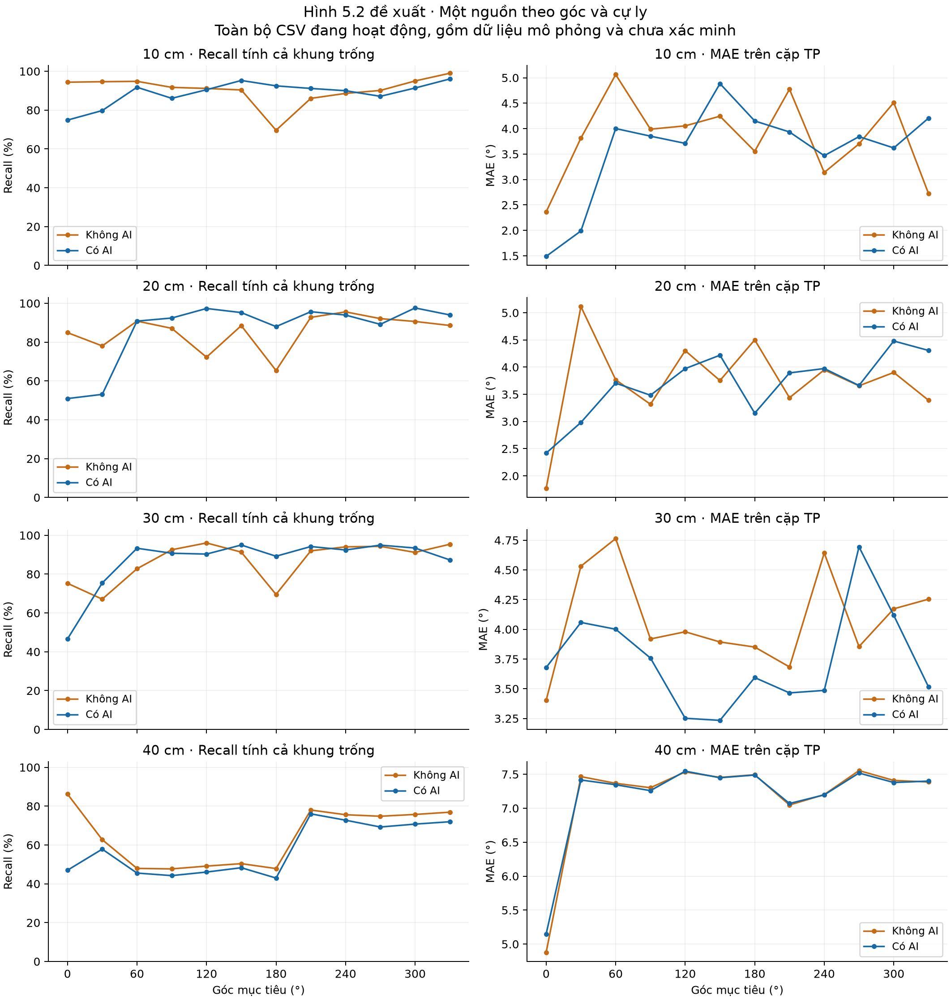
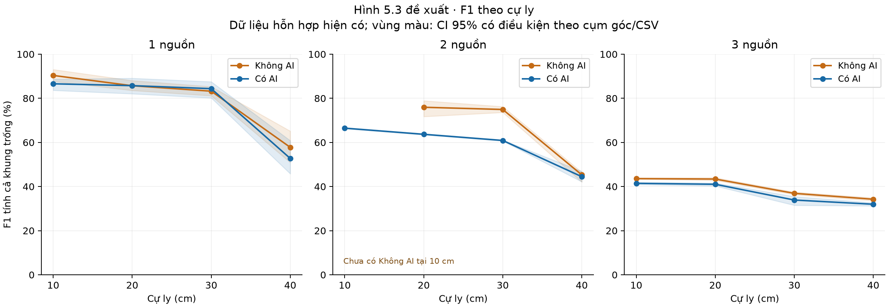
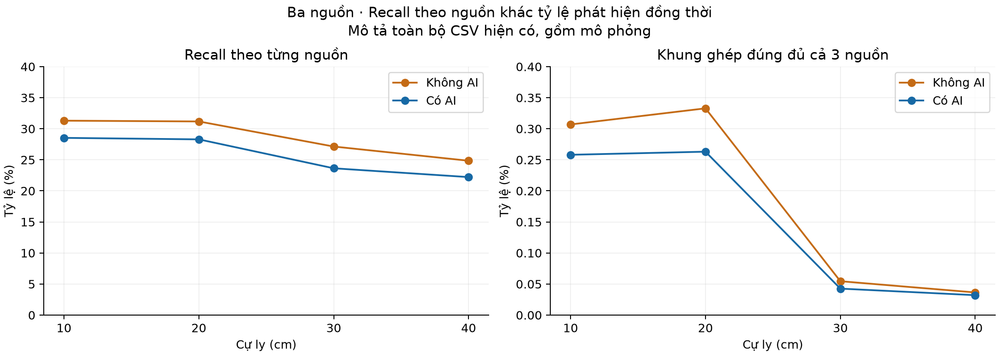

Đối chiếu ngày 16/10/2026 · Dữ liệu đang hoạt động và Chương 5
Điền được gì vào báo cáo NCKH?
Tính được số liệu mô tả cho 23/24 dòng của Bảng 5.2–5.3: Không AI 11/12 dòng, Có AI 12/12 dòng. Có thể dựng Hình 5.2 và Hình 5.3 với phần thiếu được ghi rõ. Chưa đủ căn cứ coi toàn bộ các số này là kết quả đo phần cứng trong đúng điều kiện thực nghiệm của bài.
13.782CSV được kiểm tra
16.216.648dòng dữ liệu
23 / 24dòng bảng có thể tính
0CSV bị thay đổi
Hiện trạng và nguồn dữ liệu
Đã đối chiếu SHA-256 của toàn bộ 13.782 CSV, tổng 16.216.648 dòng, và hồ sơ nguồn với lần kiểm định 15/10/2026: không có file mới, bị xóa hay thay nội dung. Tái sử dụng kiểm định trên đúng nội dung đã xác minh, rồi tính lại các tổng TP/FP/FN và độ phủ cho lần đánh giá này. Không sửa CSV, nhãn nguồn, dấu thời gian hoặc PDF. Chỉ cộng các nhánh 0–3sourceAI/NOAI đang hoạt động; bản lưu, báo cáo, tập con và bản xử lý ngoài các nhánh này không được cộng thêm như mẫu độc lập.
Khớp hồ sơ thu cũ chưa xác nhận độc lập việc thu phần cứng. Phần ba nguồn hiện gồm mô phỏng có hồ sơ và dữ liệu chưa xác minh.
Đối chiếu từng bảng và hình Chương 5
Các bảng và hình ở Chương 1–4
Số liệu cho Bảng 5.2 và 5.3
P, R và F1 được gộp từ tổng TP, FP, FN; ghép một–một với dung sai 15°. R và F1 chính tính cả khung trống. MAE chỉ tính trên các cặp TP trong dung sai. Giả định các nguồn tham chiếu được khai báo đều hoạt động ở mọi khung; CSV không có nhãn hoạt động thực tế. Ký hiệu — là chưa có dữ liệu/không xác định, không phải 0.
Bảng số dưới đây sử dụng toàn bộ dữ liệu đang hoạt động ở mỗi nhóm, gồm mô phỏng. Có thể dùng trong mục mô tả tập dữ liệu hỗn hợp; chưa chép thẳng vào bảng kết quả thực nghiệm nền yên tĩnh nếu chưa điều chỉnh mô tả và đối chiếu nguồn.
Bảng 5.2 · Không AI
Bảng 5.3 · Có AI
Các nhận xét quan trọng
- Nguồn dữ liệu: 13.191 CSV có bằng chứng mô phỏng, 149 CSV khớp bản ghi thu cũ và 442 CSV chưa xác minh. Khớp hồ sơ thu không phải xác nhận độc lập việc thu trên phần cứng. Riêng ba nguồn chưa có file được phân loại khớp hồ sơ thu cũ.
- Khoảng cách: một nguồn suy giảm rõ ở 40 cm; hai nguồn Có AI tại 10–30 cm có Recall toàn khung 55,53% → 52,15% → 48,92% và MAE 5,19° → 7,25° → 9,27°. Điểm 40 cm dùng tập góc khác nên không nối xu hướng như cùng một thiết kế đối chứng.
- Ba nguồn: Recall toàn khung Có AI chỉ 22,22–28,53%; Không AI 24,85–31,30%. Tỷ lệ khung ghép đúng đủ ba nguồn khoảng 0,032–0,263% với AI và 0,036–0,333% không AI. MAE khoảng 5,88–6,80° chỉ mô tả các nguồn đã ghép đúng, không thể đại diện cho khả năng nhận đủ ba nguồn.
- Tác động AI: trong nhóm mô phỏng N2 dùng chung đầu vào, so sánh trọng số đều theo bố trí góc cho thấy Precision tăng khoảng 5,26 điểm % ở một nguồn 40 cm và 2,85–4,52 điểm % ở ba nguồn. Recall toàn khung giảm khoảng 3,26 điểm % và 2,29–2,59 điểm % tương ứng. F1 toàn khung tăng ở một nguồn 40 cm nhưng giảm ở ba nguồn; MAE ba nguồn không giảm nhất quán. Đây là kết quả theo giả định mô phỏng, không phải mức cải thiện đã đo lại bằng mạch.
- So sánh hai nguồn còn thiếu đối chứng: tại 10 cm không có Không AI; tại 40 cm hai chế độ không có cặp góc chung. Tại 20 cm chỉ chung 7 bố trí, tại 30 cm chỉ chung 2 bố trí; AI thuộc bộ mô phỏng trong khi Không AI chưa xác minh nguồn thu.
- Trọng số: một CSV một nguồn Có AI tại 40 cm có 26.248 khung, lớn hơn nhiều file khác. Báo cáo kèm trung bình đều theo file và theo bố trí góc để thấy mức nhạy do cơ cấu mẫu; không thay thế phép gộp TP/FP/FN bằng trung bình phần trăm mà không ghi rõ.
- Lịch sử chọn mẫu: hồ sơ cũ xác nhận từng loại 40 file theo ngưỡng chỉ số dưới 55%. Kết quả trên tập còn lại có nguy cơ thiên lệch lựa chọn; không dùng mức tăng sau khi loại file làm bằng chứng thuật toán tốt hơn.
Hình 5.2 · Một nguồn theo góc

Mỗi điểm gộp các CSV có đúng góc và cự ly tương ứng, chọn 12 góc theo thiết kế. Hình sử dụng tập hỗn hợp; nguồn gốc/điều kiện phải được nêu khi chèn vào bài. Bản SVG
Hình 5.3 · F1 theo cự ly

F1 tính cả khung trống, gộp từ số đếm. Vùng màu là khoảng bootstrap 95% có điều kiện theo cụm góc hoặc CSV; không xác nhận sai số suy rộng phần cứng. Điểm thiếu được giữ trống. Bản SVG
Khả năng phát hiện đủ ba nguồn

Đủ nguồn nghĩa là ghép đúng cả ba nguồn trong dung sai, không chỉ detected_count bằng 3. Bản SVG
Recall, F1 và khung trống
So sánh trên cùng bố trí góc
Chênh lệch AI − Không AI, tính trung bình đều theo bố trí góc chung. Đây là phân tích độ nhạy thành phần mẫu; cùng góc chưa đủ bảo đảm cùng điều kiện thu. Không dùng bảng này như ước lượng tác động nhân quả trên phần cứng.
Độ nhạy với cách đặt trọng số
Độ phủ quy trình dự kiến
- Một nguồn: đủ 12 góc bước 30° ở cả hai chế độ và bốn cự ly trên tập đang hoạt động, nhưng nguồn gốc và điều kiện nền không đồng nhất.
- Hai nguồn: cấu hình (0°,45°) chưa có ở cả hai chế độ tại mọi cự ly; nhiều cặp góc khác trong kế hoạch cũng còn thiếu. Các góc (120°,240°) của nhóm AI 40 cm không thay thế bốn cặp dự kiến trong Bảng 5.1.
- Ba nguồn: cả hai bộ ba góc dự kiến đều có dữ liệu ở bốn cự ly, song bộ mô phỏng chủ yếu có 300 khung/CSV. Không thể coi ba file 300 khung là ba lần đo 1.000 khung như quy trình đã ghi.
- Đã có số liệu ở 123/144 điều kiện góc–cự ly–chế độ dự kiến. Con số này đo độ phủ dữ liệu, không chứng minh đã hoàn thành quy trình thực nghiệm hoặc độc lập giữa các lần thu.
21 điều kiện góc–cự ly–chế độ chưa có số liệu
Chất lượng, sự lặp và thời gian lưu
Còn 8.604 khung có hướng trùng trong cùng khung, 122 chuỗi khung trống dài và 6 file chỉ có tiêu đề; tổng 14.188 dòng nằm trong các cờ nghi vấn. Các dòng được giữ nguyên. Góc giống nhau giữa các khung có thể do nguồn đứng yên, lượng tử hóa hoặc làm trơn, không tự chứng minh lỗi. Không đặt một tỷ lệ lặp mục tiêu để sửa số đo. Độ dài chuỗi lặp và tự tương quan cần được đọc cùng nhau; không xem mọi khung là phép thử độc lập. Các kiểm định phân phối, vòng tròn, chuỗi và bootstrap của lần kiểm định trước vẫn áp dụng vì nội dung giữ nguyên. P-value không được dùng để xác nhận dữ liệu là đo thật.
Đã ghi nhận thời điểm sửa trên ổ đĩa của mọi CSV như thông tin phụ, không dùng để phân loại nguồn dữ liệu hay loại mẫu. Không CSV nào có thời gian từng khung trong tiêu đề hiện tại. Thời điểm lưu có thể phản ánh sao chép/chỉnh định dạng, chưa đủ để suy ra thời gian thu hoặc nhịp khung thực tế. Chưa xác minh được thời lượng thu cho toàn bộ tập. Ví dụ 2.000 khung/90 giây chỉ tương đương giả định 22,22 khung/giây, không phải thời lượng đã được xác nhận cho những file này. Lần thu tiếp theo cần JSON gắn với checksum CSV, ghi thời điểm bắt đầu/kết thúc, lưu xong, số khung và mã khung mạch nếu có.
Phân bố tỷ lệ góc giữ nguyên theo nhóm
Chỉ xét các cặp hướng ở hai khung kề nhau đều có hướng, ghép theo độ dịch vòng nhỏ nhất. Không nối qua khung trống; chưa xác nhận danh tính nguồn.
Nội dung cần điều chỉnh trong bài
- Mục 5.1: bổ sung bảng số CSV, số khung, bố trí góc, nguồn gốc dữ liệu và cự ly thực có. Tách rõ kết quả mô phỏng có hồ sơ, khớp bản ghi thu cũ và chưa xác minh; có thể giữ bảng gộp hiện trạng như phân tích bổ sung có ghi rõ thành phần.
- Mục 5.1.2: ghi đúng số khung đã dùng, mức lặp và thiếu nhật ký phiên thu. Không giữ nguyên tuyên bố mọi trường hợp đã đo 1.000 khung × ít nhất ba lần nếu dữ liệu không đáp ứng.
- Bảng 5.2–5.3: ghi R/F1 tính cả khung trống theo quy tắc hiện tại của bài. Nếu muốn thêm R/F1 bỏ khung trống, dùng cột hoặc bảng phụ riêng. Ghi rõ nền âm thanh chưa xác minh ở nhóm nào và không gán bộ N2 mô phỏng là nền yên tĩnh.
- Mục 5.2.3: bổ sung tỷ lệ ghép đúng đủ số nguồn, đặc biệt với ba nguồn. Phân tích suy giảm theo độ tách góc trong cùng nguồn gốc/điều kiện, tránh trộn khác cự ly và khác bộ dữ liệu thành một quan hệ nhân quả.
- Mục 5.3: mô tả AI là bộ chọn hướng theo loại âm; mô phỏng N2 hiện có dùng đầu vào chung, không thay thế phép đo quạt/bàn phím cố định 90° tại 30 cm. Người dùng xác nhận mục tiêu là giọng nói; câu trong bài ghi cả âm nhạc thuộc KEEP cần đối chiếu lại nhãn huấn luyện.
- Mục 5.4: xác minh cặp build log/map tương ứng hai chế độ, phiên bản firmware và cấu hình. Bài mô tả lịch sử AI 10 và bước khung 256 mẫu, trong khi mã hiện tại đặt AI_WINDOW_SIZE=5, thu đủ 512 mẫu rồi đặt lại chỉ số về 0 và không thấy thao tác giữ nửa khung trong hàm thu; cần xác nhận đúng phiên bản trước khi dùng ngân sách 16 ms cho mã hiện tại.
- Mục 5.5–5.6: để trống các ô điện năng, độ trễ, DMA và nhiễu chưa có phép đo tương ứng. Kết luận hiện có chỉ hỗ trợ mô tả đánh đổi Precision–Recall dưới điều kiện/giả định được nêu, chưa chứng minh AI cải thiện toàn diện hoặc nhận đồng thời ba nguồn ổn định.
Đoạn văn tham khảo
Dữ liệu được đánh giá bằng ghép một–một giữa hướng dự đoán và hướng tham chiếu, sử dụng sai số góc vòng với dung sai 15°. Precision, Recall và F1 được tổng hợp từ số đếm TP, FP và FN. Recall và F1 chính bao gồm mọi khung, kể cả khung không có hướng. MAE chỉ tính trên các cặp TP; do đó MAE được diễn giải cùng Recall và tỷ lệ khung phát hiện đúng đủ số nguồn.
Tập dữ liệu hiện trạng gồm 13.782 CSV với 16.216.648 dòng; có 6 file chỉ chứa tiêu đề nên không góp khung đánh giá. Đối chiếu hồ sơ nguồn xác định 13.191 file mô phỏng có tài liệu, 149 file khớp bản ghi thu lịch sử và 442 file chưa xác minh. Các thống kê gộp mô tả tập dữ liệu hiện có; chúng không được dùng thay cho toàn bộ kết quả đo phần cứng ở nền yên tĩnh hoặc các kịch bản nhiễu chưa được xác nhận.
Trong nhóm mô phỏng có chung đầu vào, bộ lọc AI làm tăng Precision nhưng đồng thời loại bỏ một phần hướng phù hợp mục tiêu, dẫn tới giảm Recall tính trên mọi khung. Với ba nguồn, tỷ lệ phát hiện đúng đủ ba nguồn còn thấp dù MAE trên các cặp TP ở mức vài độ. Vì vậy, chưa thể kết luận MAE thấp phản ánh khả năng định hướng đầy đủ hoặc AI cải thiện đồng thời mọi chỉ số.
Căn cứ và giới hạn
Đã đọc toàn bộ nội dung liên quan trên các trang PDF 50–56 và những trang liên quan của Chương 3–4 trong Báo cáo NCKH, gồm chú thích, quy tắc ghép, điều kiện nền và số khung dự kiến. Existing moving-block per-file and geometry-cluster 95% bootstrap CIs reused after identical SHA-256. Conditional on clusters/stationarity, not independent frame trials or hardware validation.
Bảng tổng hợp mô tả toàn bộ tập hiện có. Kết luận thực nghiệm cần đối chứng cùng góc, cùng nội dung âm thanh, cùng nền, cùng phiên bản firmware và quy trình thu. Không dùng p-value hoặc mức độ tự nhiên của phân phối để kết luận nguồn gốc dữ liệu.
Các số liệu, thành phần nguồn, độ phủ theo bộ góc, chênh lệch theo nhóm và danh mục đầu vào có trong các tệp căn cứ ở đầu trang. PDF nguồn và dữ liệu gốc được giữ nguyên.